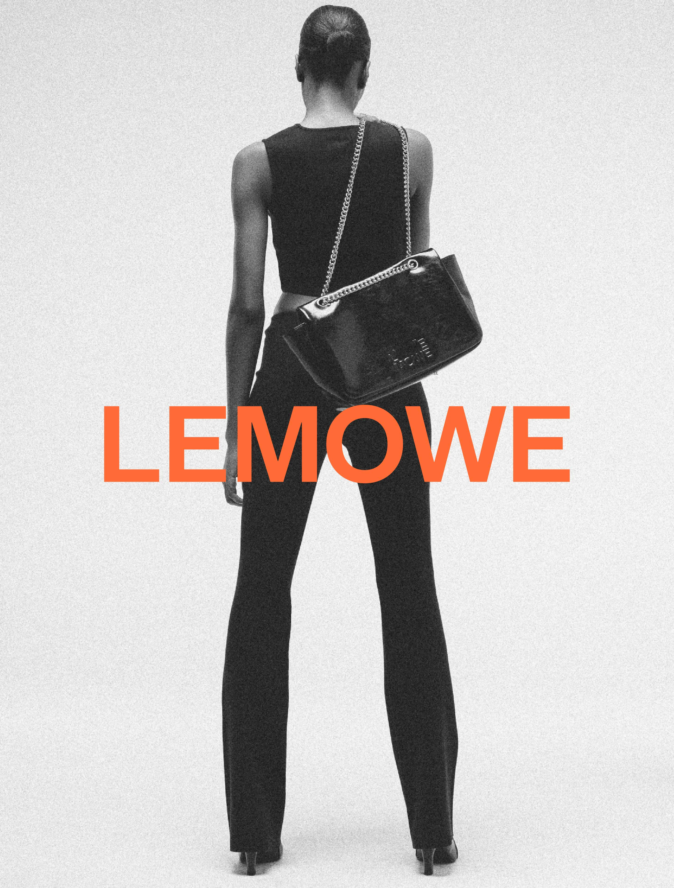
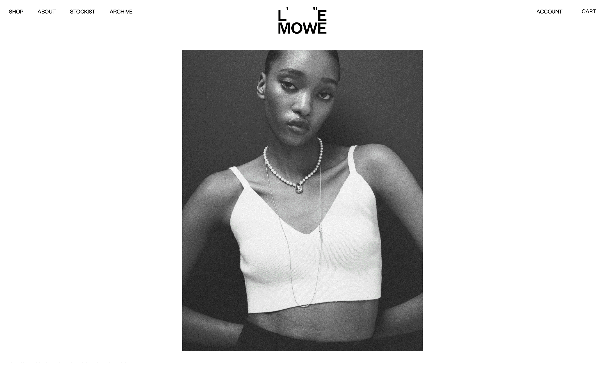
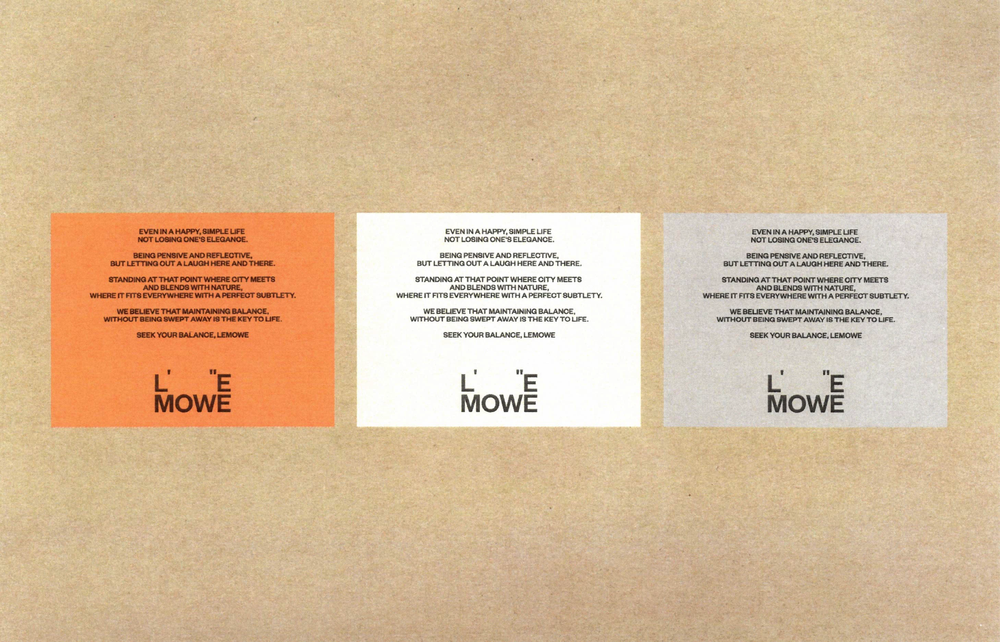
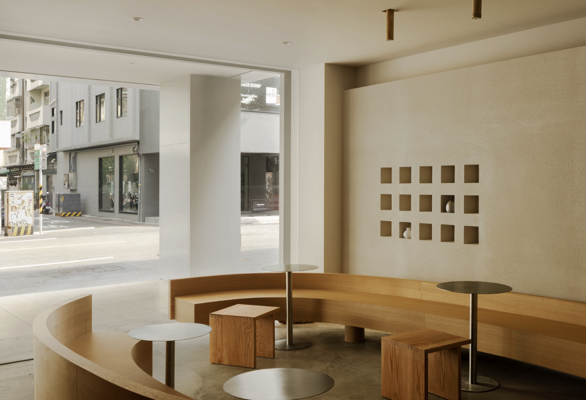
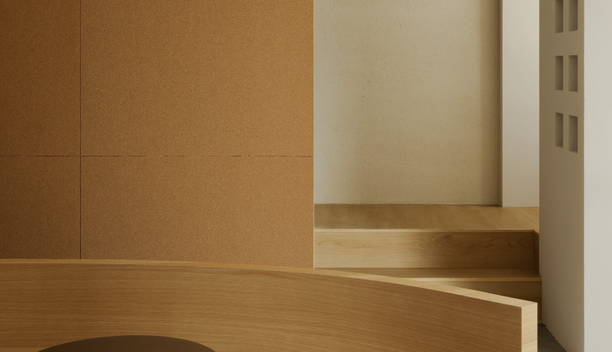
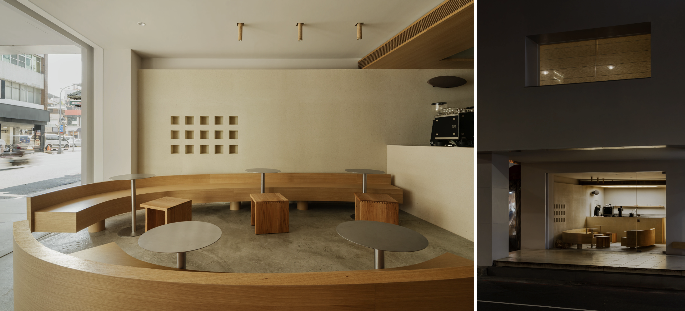

ÉDITIONS
Well, I was born in Central Asia. I've always been surrounded by a lot of multicultural people, my family itself. I have a lot of international friends. When we began the redesign we started from scratch. We wanted to build a universal symbol of protection — not tied to any one culture or religion, but one that still unites us. Throughout the research we came across Inanna.

Ed. 001 / SpreadColor

Plate iiMedium format

Plate iiiNatural
NORTH ATLAS
North Atlas began as a quiet archive of maritime maps from the Baltic. The identity had to feel old and new at once — a system a harbor master would trust, and a visitor would bookmark. We set the wordmark in a drawn grotesk, gave it a single thin rule, and stopped there.

ExteriorPlate i

Port of RaumaFilm

Atlas / Vol. 2Offset 2c